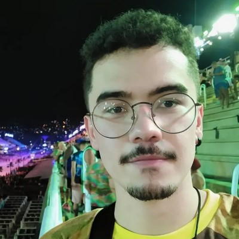
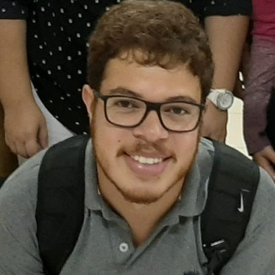

Sobre o Site
Origem & Objetivo do site:
Em 2023 foi fundado o Portal Geo Grafias, um site montado por e para Professores de Geografia! O objetivo desta plataforma é trazer conteúdos diversos para professores de geografia, aqui você encontrará inúmeras possibilidades para inovar em suas aulas: tours virtuais, mapas, jogos, notícias e inúmeros outros recursos didáticos possíveis!!
O Portal Geo Grafias é a materialização de um Trabalho de Conclusão de Curso - e, mais do que isso, de um sonho! - que começou no ano de 2022. O TCC que originou nosso site você pode conferir aqui.
Equipe de Professores:
Profa. Dominique Morem 

Fundadora do Portal, Dominique Morem é uma Geógrafa e Professora de Geografia apaixonada por sites educativos. Carioca nômade, já residiu nas cinco regiões brasileiras, mas escolheu a princesinha de Minas, Juiz de Fora, para se formar, fez da Universidade Federal de Juiz de Fora (UFJF) seu ninho acadêmico. O Portal Geo Grafias surgiu em 2022, fruto de um Trabalho de Conclusão de Curso que foi basicamente a reunião de três das paixões da doida varrida (tecnologia, educação e geografia): um site de Geografia voltado à professores. Atualmente, Dominique cursa Sistemas de Informação no Centro Universitário do Rio São Francisco (Unirios), em Paulo Afonso/BA. Nutrindo um profundo carinho pela área tecnológica e educacional, a 'jovem senhora' resolveu, por hobbie, especializar-se em "Metodologias Ativas e TDICS na Educação" e em "Desenho Instrucional".
Prof. Alberto Batista

Tocou um samba enredo e o Alberto veio correndo! Alberto Batista é professor de geografia e apaixonado por carnaval, tanto o é que redigiu um Trabalho de Conclusão de Curso totalmente voltado ao tema! O professor é natural de Guaratinguetá/SP mas graduou-se na UFJF. Professor Alberto participa do grupo GhEnTE (Geografia Humanista-Ensino-Teoria-Experiência) e atua como bolsista no Observatório da Geografia - ENEM e PISM. O docente paulista também já atuou em pesquisas com a temática de mapeamento de conflitos, especialmente quando fez parte do projeto "Mapa dos conflitos urbanos em Juiz de Fora", Alberto também já foi monitor de disciplinas relacionadas a docência, como Ensino de Geografia na Escola Básica I/Ensino de Geografia na Escola Básica II .
Profa. Angel Loo
Bacharel em Geografia (UNIFAL-MG), mestre em Geografia (UFJF) e futura professora de Geografia (UFJF). Nascida em Resende-RJ, caiu de pára-quedas no curso mas com o tempo foi pegando gosto, principalmente, na parte física (especialmente pela área de Recursos Hídricos e Geoprocessamento, áreas onde desenvolveu a sua dissertação). Atualmente, a professora fluminense encara novos desafios na parte da educação, e espera, ansiosamente, pelo que o futuro reserva.
Profa. Clara Pratti
Técnica em Meio Ambiente (IFRJ - Campus Pinheiral) e Professora de Geografia (UFJF) e, mais importante, amiga da fundadora do site, Clara Eliza, é de Vargem Alegre - RJ. Durante o ensino médio se apaixonou por geomorfologia e, a partir daí, decidiu se aventurar no curso de geografia. Durante a graduação percebeu que o buraco era mais embaixo e o interesse por geomorfologia foi substituído pela educação ambiental, vivenciada através projeto de extensão do Jardim Botânico da UFJF.
Prof. Guilherme Senra
Já viu algum panda professor? Pois professor será o primeiro que você irá conhecer! É acolhedor como uma mãe e tem um abraço reconfortante como um urso panda. Professor Guilherme se formou na UFJF e é professor concursado do Estado de Minas Gerais, atualmente lecionando em Além Paraíba/MG. O professor mineiro já foi vice-presidente da Orbis Consultoria Jr, bem como diretor comercial da mesma empresa. Guilherme também já atuou como bolsista de treinamento profissional nos projetos: “Laboratório de Ensino de Geografia” e “Ações de Divulgação UFJF de Educação Básica”.
Profa. Nicolle Grizendi
Loira, linda e bilíngue a professora petropolitana, Nicolle Grizendi é ambidestra quando o assunto é lecionar: é professora de inglês e geografia. Nicolle é mestranda no PPGEO da UFJF, bem como bacharel e licenciada pela mesma instituição. A petropolitana adora estudar nascentes, possui muito vigor em trabalhos de campo (pois malha) e ama publicações científicas. Nicolle participa, já há muitos anos, do grupo TERRA (Temáticas Especiais Relacionadas ao Relevo e a Água). Nicolle ama viajar, já conheceu diversos países e residiu em Portugal durante o período de um intercâmbio.
Prof. Saulo Faria
Saulo Faria, mineiro de Juiz de Fora/MG, o professor ruivo atua em escolas da rede estadual de Minas Gerais. Graduou-se em 2019 em Licenciatura em Geografia na UFJF e nesse percurso foi monitor de algumas disciplinas no curso: Formação Territorial do Brasil e disciplinas da FACED (Faculdade de Educação) foram algumas delas. Professor Faria também foi voluntário em um projeto junto ao grupo TERRA (Temáticas Especiais Relacionadas ao Relevo e a Água). Professor Saulo é uma pessoa para lá de detalhista e perfeccionista, características que fazem jus ao signo deste: virgem.